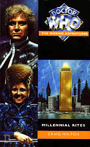

|
Millennial Rites
|
BASIC PLOT DOCTOR And the Valeyard (page 283). COMPANIONS MATERIALISATION CIRCUIT Pg 188 The TARDIS dematerializes from Trafalgar Square in The Great Kingdom, and travels to its seat in the Tabernacle. PREPARATORY READING And despite the fact it was published two months later, Downtime would be helpful (or you could track down the video). CONTINUITY REFERENCES Pg 3 "Yeti. Cybermen. Daleks." These three words, the first three words of the novel proper, refer to The Web of Fear, The Invasion and Day of the Daleks respectively. "He thought of his late lamented employer, Tobias Vaughn, and shook his head." The Invasion and, much, much later, Original Sin. Pg 4 "Vaughn may have died, but his legacy lived on: the micro-monolithic circuit, invention of the Cybermen." The Invasion. There are numerous mentions throughout the book to this circuit, along with repeated references to Tobias Vaughn and the Cybermen. I do not record them all. Pg 9 "'Melanie Bush, you really are a sanctimonious old prude,' snapped Chantal Edwards." I accept that we need to know who these people are, but there must be better and rather more subtle ways of getting their identities across than putting their surname on their name at their first appearance in the narrative. Pg 11 "She thought of a suitable reply that was both sufficiently evasive yet truthful. Naturally." Mel always aims to tell the truth: 'honest and boring as they come,' as she said in The Trial of a Time Lord. I^2 is a reference to System Shock. Again, this is mentioned frequently in the first sections of this book, and I do not record every appearance. "She was as broadminded as the next person, but working for a company whose director was a bionic snake seemed almost unpatriotic." System Shock. "And she clearly remembered her interview with David Harker, ACL's head of development." In Business Unusual, Mel was about to take up a position with Ashley Chapel Logistics. She didn't - and, as this book shows, remains the only person offered a job with them not to take it up. To be fair, she did get something of a better offer (even if she had to stow herself away in order to achieve it). Pg 13 There is a reference to Fermat's Last Theorem, which, apparently, Ashely Chapel Logistics have sorted. Algebraically. Which is odd, since there was an algebraic proof in 1993, before this book was a) written and b) set. There was also a proof locked away in the Library of Saint John the Beheaded, as mentioned in All-Consuming Fire, but we can assume that remained separate. Pg 14 "She had risen through the ranks, from scientist to civil servant, before finally replacing Rachel Jensen as chief scientific advisor to the Cabinet." Rachel Jensen appeared in Remembrance of the Daleks. Pgs 14-15 "Every aspect of British scientific policy had fallen under her remit, from the aborted attempt to tap geothermal energy early on in her tenure, to the British Space Programme of the nineteen-eighties." These are supposed to refer to Inferno and The Ambassadors of Death, but you have to fudge the dating somewhat. See Continuity Cock-Ups. Pg 15 "The Doctor was a small man with a mop of dark hair and an impish expression [...] Not this imposing figure who brimmed with arrogance and bravado." Reference to the Second Doctor, and his meeting with Anne in The Web of Fear. Pg 16 "She grabbed the shiny silver sphere without asking and turned it over in her hands as if burnt." We see this Yeti-controlling sphere in The Abominable Snowmen, The Web of Fear and Downtime. Other references to the Web of Fear (Goodge Street Station, Colonel Lethbridge-Stewart, Jamie and the Great Intelligence) follow. Pgs 16-17 "A small portion of her mind accepted the fact that the stranger was the same man who had helped her father against the Intelligence in the Tibetan mountains, who had then turned up forty years later - looking not a day older - to fight the same evil in a web-ensnared London. It was helped by the circumstantial evidence: Lethbridge-Stewart's mysterious scientific advisor, instrumental in the two Auton attacks, the Axon presence, the Zygon gambit with the Loch Ness Monster; wasn't that scientific advisor called the Doctor? And a report that had arrived on her desk only a few months ago - from Brigadier Winifred Bambera, wasn't it? - had mentioned the invaluable help provided by UNIT's former scientific advisor in the Carbury situation." The Abominable Snowmen, The Web of Fear, Spearhead from Space, Terror of the Autons, The Claws of Axos, Terror of the Zygons (and the phraseology of this reference, 'the Zygon gambit', refers to Remembrance of the Daleks (why must it always be referred to this way?)), Battlefield. Pg 17 "And weren't there four totally different descriptions of this 'Doctor': a scruffy clown, a debonair dandy, a bohemian, and an imp with a Scots' burr?" Doctors 2, 3, 4 and 7. See Continuity Cock-Ups. Pg 19 "With a few exceptions, everyone would be made redundant on 30 December." It can't be helped, but the dating of this story, and the constant references to the turn of the Millennium, had me endlessly thinking, 'I wonder what's going on in San Francisco right about now...' (The Telemovie). To say nothing of Millennium Shock. Pg 24 "It came back four years ago, Doctor. Or didn't that particular invasion merit your attention?" Downtime. Pg 25 "Before this universe was created, there was another one. A totally different universe, with alien physical laws." This is Andy Lane's theory on the Great Old Ones, ancient beings who were originally created as part of HP Lovecraft's Cthulhu mythos. They were gracefully shoe-horned into Who continuity in Lane's novel All-Consuming Fire. This is the first time that they are referred to as the previous Universe's Time Lords, however. "'Yog-Sothoth? Now why does that sound familiar?' 'It's the Intelligence's real name, and it crops up in certain arcane literature from time to time.'" Indeed - in the stories of one HP Lovecraft. Pg 26 Reference to earlier Intelligence invasions on Hiskith, Danos and Tibet, the latter being The Abominable Snowmen. The former two are unrecorded adventures. (Actually, there's no evidence to suggest that the Doctor was even there - he may just have heard about them.) "After his failure in Tibet." The Abominable Snowmen. "'Lloigor had dominated Vortis, until I turned up that is; Shub-Niggurath conquered the planet Polymos and colonized it with her offspring, the Nestene Consciousness -' 'As in the Autons?' Anne interrupted." In the first case, The Web Planet and Twilight of the Gods; in the second, Spearhead from Space, Terror of the Autons, Rose and see also Synthespians™. The annoying list of Cthulhu creatures comes originally from All-Consuming Fire and is elaborated on, for no adequately explicable reason, in Divided Loyalties. "Once he established a bridgehead, it was child's play for him to arrange transport to London." The Web of Fear. "And after the splendid show that UNIT put on four years ago, no Intelligence." Downtime. "Lionel Stabfield, who expressed a desire to keep I^2 in the Central London offices that the software and hardware firm occupied." System Shock. Pg 37 Reference to Jamie. "Victoria was fine; Anne had seen her during the Intelligence's last incursion, four years ago." Downtime. But see Continuity Cock-Ups. "'A few months after that dreadful business with the Cybermen - when you and your father were in the United States - I was forced to contact my own people -' 'The Time Lords,' said Anne, demonstrating her familiarity with UNIT's files. The Doctor nodded. 'That's right, the Time Lords. And then we were forced to part company -' He broke off." The Invasion, The War Games. Given what we have since learned about Season 6b, particularly in Players and World Game (which ends leading into The Two Doctors, in which Jamie appears), it's a damn good job that Hinton had the Doctor interrupted by his mobile before finishing that sentence. That said, see Continuity Cock-Ups anyway. Reference to Daleks. Pg 39 "Better than the closure of I^2: at least the photocopiers didn't start eating people." System Shock. Chapel, on Anne Travers: "They all run around, pretending to respect her; everybody knows that her pet project - UNIT - is now totally in the hands of the EC." As we see in the UNIT Battlefield, which is clearly multi-country. Chapel seems to think that Anne didn't plan it that way, but it remains possible, given that this is just point of view, that he is wrong. Pg 44 Reference to Victoria. "After the Cybermen shut down International Electromatics." The Invasion. Pg 45 "Remember that, the next time we meet the Master or the self-styled Queens of the Winding Sheet.' He frowned. 'Or the Terrible Zodin, come to that.'" Terror of the Autons et al, an uncertain (and possibly frivolous) reference, and the Terrible Zodin, mentioned in The Five Doctors, Attack of the Cybermen and books too numerous to mention here, except for Lungbarrow, which finally ties up her origins as a celebrated sword-swallower. Pg 46 "Although as a Time Lord, I should point out that the end of this particular Millennium actually takes place at midnight on 31 December next year." Pedantic, yet accurate, and it makes even more of a mockery of the Telemovie. "And then some bright spark remembered the Festival of Britain, that fervour of jingoism in the Fifties." The Doctor's going to visit the Festival of Britain three times: twice in Timewyrm: Exodus (one in an alternate time-line), and once in Endgame. Pg 47 "So now London has a four-hundred-foot-high ziggurat on the site of Battersea Power Station." 'Hang on,' I hear everyone cry, 'but Battersea Power Station was still standing in 2157 when the Daleks knocked one of its chimneys down, the blighters!' (The Dalek Invasion of Earth.) Fear not, gentle reader, by the end of this book, Battersea Power Station has risen from the ashes. "The Doctor placed a hundred pound note on the plate." While this currency is actually wrong for the real year 1999, it does square with the five pound coin of Battlefield, which also never existed in reality. "The original scrolls of the first Lama of Det Sen." Det Sen was the location for The Abominable Snowmen. "The Library of Saint John the Beheaded" first appeared in All-Consuming Fire. Pg 48: On Professor Travers: "They even made out that the second Yeti invasion was all his fault." Anne is obviously horrified by this. I hate to be picky, but, actually, given that he re-animated the Yeti sphere which caused the resurrection of the Great Intelligence, the second Yeti invasion (The Web of Fear) was Professor Travers' fault. "The image of her once proud father as a blind, shambling vagrant, animated by alien hatred during the Intelligence's third invasion, burnt in her mind and made her eyes mist with tears." Downtime. Pg 65 "The red velvet chaise longue that the Doctor claimed was from a variant of the Roman Empire he had visited not so long ago." State of Change. "'Or have you forgotten the vicious Herecletes? Or the Stalagtrons, with their inhuman plans for mankind?' He span round with his arms outstretched. 'Or the Vervoids?'" Two unknown references (although they are also mentioned in The Quantum Archangel) plus The Trial of a Time Lord episodes 9-12 (Terror of the Vervoids). Pg 66 "Mel smiled. 'We haven't met them yet. Remember?' For some strange reason, the Doctor seemed obsessed with the Vervoids." This may be quite subtle. The Doctor is worried about becoming the Valeyard - indeed, he has been so since meeting him, as Time of Your Life (and Pg 83 of this book) makes clear. He has spent a long time avoiding Mel (see also Business Unusual) and, now that she is here, he knows that the next part of the path to becoming the Valeyard is the Vervoid adventure. Therefore, he's trying to avoid them next. This would be particularly relevant if (as suggested below) his memories of them keep coming and going. It's unfortunate in a way, because by The Quantum Archangel, the next chronological story in the novels (and audios), he's met them. So much for that cunning plan. "I can drop you back minutes after we left Pease Pottage." This is where Mel came from (Business Unusual). In the end, the Doctor doesn't leave her in Pease Pottage, but instead mentally manipulates her to go off with Glitz in Dragonfire (Head Games) before she eventually ends up in a shallow grave on a dusty world called Heritage (Heritage). Not incessantly grinning, now, are you? "'If you drop me back, I'll end up meeting myself at my own college reunion.' 'Probably not,' muttered the Doctor, fussing over the console." He goes on to explain that time sorts out all these little paradoxes, and Mel somehow won't make it. Indeed: she's dead in an unmarked grave on a dusty world called Heritage. It's possible that Time has rather over-killed this particular situation. Pg 79 "After their recent, harrowing escape with the Quarks and the giant wasps." Reference to The Killer Wasps, a second Doctor comic strip. Also mentioned in The Quantum Archangel. Quarks are from The Dominators originally. Pg 82 "After his kangaroo court trial on board the Celestial Intervention Agency's space station - a trial arranged by the most corrupt members of his own race where the learned court prosecutor had been a dark and twisted version of himself - the Doctor had decided to give up his jackdaw meanderings." Can you say 'info dump'? The Trial of a Time Lord, Time of Your Life. See also Continuity Cock-Ups. Pg 83 "If he could avoid meeting the Melanie Bush that the Matrix predictions had foretold he would meet, he could shift time onto a different track." As we see in Time of Your Life. "His first attempt at a companion had been Angela, but that had ended quite tragically with that business with the Network." Time of Your Life. "But then he had met Grant, and they had shared many adventures together before eventually parting company." By many, we mean 'two' that we know of: Time of Your Life and Killing Ground. Grant briefly reappeared in two short stories in the anthology Perfect Timing, in one of which he left the Doctor. "Others followed." Including Frobisher, as we read of in Mission: Impractical, and Evelyn Smythe, as we learn in Instruments of Darkness. Both of these companions appear more in the audios. "The Master was hell-bent on yet another of his petty, spiteful conquests. This time, he was trying to undermine the Earth's stock markets in partnership with his latest allies, the Usurians. Obviously, he must have been very bored at the time." Business Unusual. The Usurians appeared in The Sun Makers. On Mel: "He had refused to let her travel with him. He had forbidden her to enter the TARDIS, and had sent her away. But she had tricked him, stowed away, and become his companion without his consent." Business Unusual. "The Matrix had foreseen that he and Mel would answer the distress call from the Hyperion III." Terror of the Vervoids. Pg 84 "He would still avert his metamorphosis into the Valeyard. Never again would he place a companion in danger." This references the line in The Trial of a Time Lord in which the Valeyard claims that the Doctor's companions are put in danger twice as often as the Doctor himself. The Sixth Doctor's desperation not to become the Valeyard led to, the NAs speculate, the Seventh Doctor deliberately killing his former self, as the Sixth "was so scared of what he might become that he wouldn't do what needed to be done" (The Room With No Doors, page 158). See also Love and War, Head Games and The Room With No Doors for the important sections of this arc. Also note that Spiral Scratch pretty much contradicts all of this, as it gives a different reason for the Sixth Doctor's regeneration. Brief reference to Omega (The Three Doctors, et al). "How long before he started using his companions as pawns in some cosmic chess game? And how long before he was prepared to sacrifice such a pawn to guarantee a checkmate?" Not long now, actually. Not long at all. (A rather unsubtle foreshadowing of the direction that the NAs would take.) "As he recalled, the anomalies were at the quantum subharmonic level, which automatically suggested a Fortean flicker." We saw one of these in The Highest Science. Pg 108 "For all she knew, she might have just helped a couple of mad businessmen in their attempts to defraud the world's banking systems. Considering the circumstances under which she had first met the Doctor, that would be horribly ironic." Business Unusual. Interestingly, Mel's guess is exactly what David Harker thinks the Codex will do. Pg 116 "'I only want to slip in and out,' he whispered, fully intending the double entendre." The only thing more annoying than the double entendre itself is the narrative then telling me that I should have noticed it for what it was. Pg 120 On spell-books: "the other purported to be a transcription of writings from the time of Atlantis." This may just connect with the semi-mystical/magical nature of much of Fallen Gods. Atlantis also featured in The Underwater Menace and The Time Monster and was significant in the Daemons. Pg 133 "In Africa, I learnt the unspoken truths of the shamen's magic. In Tibet, the secrets of the lamas were revealed to me. In a crypt beneath the Kremlin, the old Russian sigils of power were taken from their silk wrappings and displayed before me." Uncertain references, although the Tibetan one may refer to The Abominable Snowmen. Reference to the Library of Saint John the Beheaded (All-Consuming Fire et al) Pg 135 "Especially since the work-bench itself had been a gift from a grateful alchemist." Uncertain reference. Pg 136 "The Doctor stood up, feeling the full weight of his nine hundred years." In Time and the Rani, the Doctor is 953 years old, so unless Mel ages really well between now and then, this is clearly an approximation. (The Doctor claimed to be 900 in Revelation of the Daleks and The Trial of a Time Lord.) "The most powerful tool developed by the Time Lords was block transfer computation." Logopolis. "[Block Transfer Computation] had even been harnessed to bleed off excess entropy from the universe." Logopolis again. "Quantum mnemonics, the dark science of an earlier race of Time Lords, made black transfer computation seem like a conjuring trick." One of Hinton's more annoying traits as an author is his need to say 'Look, my idea's bigger than your one' all the time. This isn't the first time it happens and it won't be the last. Pg 143 "You're playing with a fire so dangerous you could scorch eternity." This line is stolen, quite blatantly, from Original Sin. References to both The Web of Fear and Downtime. Pg 149 "Mel's eyes widened in disbelief. 'We're going up into the loft? And then what? A roof-top chase across London? This isn't Peter Pan.'" This may be a reference to the fact that Bonnie Langford has repeatedly played the role of Peter Pan in pantomime. "Standing outside the library, the Doctor was well aware of the watching eyes of two opposing street gangs who were responsible for the institution's security." This style of guardian for the Library was established in All-Consuming Fire. Pg 153 "It's times like this when I really miss my sonic screwdriver. I should have sued the Terileptils for criminal damage." The sonic screwdriver was destroyed in The Visitation. Annoyingly, this line is identical to one uttered by the Doctor in The Crystal Bucephalus (although at least Hinton is now stealing lines from his own work rather than someone else's). Pg 155 "Skaro; Telos - home of the creatures who had killed his mentor, Tobias Vaughn; Sontara; Polymos." The homeworlds, respectively of the Daleks, the Cybermen (adoptive, after the destruction of Mondas), the Sontarans and the Nestene Consciousness. (It's generally accepted that the Cybermen didn't actually get to Telos (following the destruction of Mondas) until the early years of the 21st Century, but since Saraquazel exists outside of the standard timeline, there's no reason that Chapel shouldn't know about it, even before it's happened.) In Spearhead From Space, it's stated that the Nestenes have no home (which also ties into Rose), but we can be charitable and assume they at least had one once. Pg 161 "'Since I'm going to die anyway, perhaps you'd care to tell me who Saraquazel really is,' asked the Doctor nonchalantly. He knew it was a cliche, but his options did appear rather limited." As well as being a cliche, it's also lifted from The Caves of Androzani. Describing it as said cliche is a bit rich from a man who describes the Doctor's face as "obviously capable of deep passions" (Pg 15) and can have a character thinking "and may the souls of the dead forgive me my hubris." (Pg 266), the latter of which reminds me, horribly, of The Twin Dilemma. Pg 163 "And when the Codex is run, I shall be that leader." He's (deliberately) channeling Tobias Vaughn from The Invasion. Pg 165 "In an old brownstone in New York, a thoughtful man levitating in a voluminous blue cloak cocked his head to one side, attempting to interpret the warnings that the spirits were screaming at him. And in a Dublin bar, a blond-haired man in a dirty beige trenchcoat looked up from his Guiness, but dismissed the odd sensations as a result of the previous fifteen pints." These are both comic-book characters: the first is Marvel's Doctor Strange, while the second is John Constantine from the comic book 'Hellblazer'. Another comic book character - Death from The Sandman series - would later appear in Happy Endings. Pg 171 Not a sentence I thought I would ever write: Bonnie Langford does her finest Darth Vader impersonation: "'Silence, fool! I am the Technomancer, and my powers are without compare.' She had snapped her fingers, and the thaumaturg had reached for his throat, trying to catch a breath while he incantation slowly strangled him." 'Do not underestimate the power of the force,' she might have said. Pg 177 "The last time anything like that had been swimming in the Thames, it had been the Zygon's bio-engineered Skarasen." Terror of the Zygons. Pg 179 The Technomancer's god is, rather gloriously, the Lady Tardis. Pg 182 "The artificial city of Castrovalva, with its complete lack of internal logic, had been bad enough." Castrovalva, obviously. Pg 186 Mention of the Doctor's respiratory bypass system (Pyramids of Mars). Pg 187 "He remembered the countless defences that he had installed over the centuries to prevent unauthorized entry: the twenty-two tumbler lock; the metabolism sensor, the isomorphic controls." The Daleks, Spearhead from Space, Pyramids of Mars. (I had always assumed that the Doctor was lying to Sutekh about the isomorphic controls. Ah well, you live and learn.) Pg 193 "Chess was my fourth incarnation's strong point." We frequently saw the Fourth Doctor playing chess, most often with K9. "In the minutes since its [the TARDIS's] disappearance, the Doctor had come to the conclusion that the Hostile Action Displacement System - the HADS - had been activated." We first saw this in The Krotons, it's been mentioned in numerous books since then, but not a single broadcast programme. Pgs 194-195 "The Doctor shrugged. 'I know that my real name is a little difficult to get your tongue round, but isn't that taking it a bit far?'" According to Return of the Living Dad, his name is at least long enough to break into 38 pieces, although Kate Orman may well have been talking metaphorically. Pg 200 "The emerald green tetrahedron of Yog-Sothoth was imbedded in his body." Presumably it is relevant that the symbol of the Great Intelligence is a tetrahedron: the same shape as the pyramid of silver spheres in The Abominable Snowmen. Pg 208 "Something was wrong. The Archimage tried to break free, but the flow of energy was more than he could handle. All he could do was accept the life force that was enervating and tainting every cell of his being." This is one of the most annoying moments in the book as absolutely no explanation is given as to why this happens, other than the fact that Hinton needed a change of personality in the character. Pg 212 "And kindly desist from calling me Mel!" is presumably a deliberate echo of the First Doctor's line in The Five Doctors. Pg 214 "And then he recognized it with a jolt of horror that shocked his neural filaments: a pan-dimensional vacuum emboitement." This PVE is a bigger and better thing than the CVE from Full Circle and Logopolis, another example of Hinton's technobabble one-upmanship. Pg 226 "Come on, Doc, spill the beans!" is a startlingly accurate impersonation of Mel's speech patterns... Pg 230 ...while "pantechnicon of cozenage" is pretty good for the Sixth Doctor as well. Pg 234 "His once brilliant jacket was now a jet-black robe that reached down to the floor, with a huge, silver-trimmed black collar which covered his shoulders." The Doctor has slipped into the Valeyard's costume from The Trial of a Time Lord. Pg 242 The book, "The Architecture of Pelli" refers to Cesar Pelli, the architect who designed Canary Wharf in 1986. Pg 250 "Forget the Daleks or the Cybermen; the most dangerous force in the universe was a creature possessing all of the Doctor's intellect and abilities, but with none of his moral scruples." The Master used the phrase 'moral scruples' to describe the Doctor's behaviour in The King's Demons. "Facing such a being across a Time Lord courtroom had been bad enough, especially with the Master tittering over the situation from the depths of the Matrix." The Trial of a Time Lord. Pg 269 "You have a photographic memory and can read faster than a spielsnape being chased by a rabid dog." Spielsnapes are animals from Necros, and are mentioned in both Revelation of the Daleks and The Trial of a Time Lord. Pg 273 "The release of her life-force will catalyse an artron energy transfer into the Archimage." Artron Energy is first mentioned in The Deadly Assassin. It's since been described as something which all time travellers pick up as they journey through the vortex, hence both Saraquazel and Yog-Sothoth having such energy about their persons. Pg 274 "I've never teleported anyone before. Well, not without technical support." The number of occasions that the Doctor has used a transmat is massive, but the first time was probably in The Seeds of Death. Pg 279 "Doctor?' she asked uncertainly. 'Expecting someone else?' he muttered, and then frowned. 'Now that sounded familiar.'" Of course it does, it's the first words spoken by the Sixth Doctor himself at the end of The Caves of Androzani (although Peri asked the question back then). Pg 283 "The man standing next to the Archimage wasn't just wearing the Valeyard's costume; he was the Valeyard." So he does finally turn up, then. Pg 290 "The Valeyard activated the isomorphic subroutines when he entered the TARDIS." Pyramids of Mars again (and I still thought he was bluffing way back then). Pg 292 "The Master had claimed that the Valeyard came into being somewhere between the Doctor's twelfth and final, thirteenth, incarnation" The Trial of a Time Lord. Except that the Master doesn't claim this at all. He claims that the Valeyard came into being somewhere between the Doctor's twelfth and final incarnation, with no mention whatsoever of the thirteenth. We've seen enough future Doctors by now to know there are definitely going to be more then thirteen incarnations, so Hinton's retconning of this line is just annoying. The Eight Doctors makes it clear that the High Council brought the Valeyard into being. Pg 293 "He froze. Was the creature he had become an illusion, or did he really carry the seeds of the Valeyard inside him?" This ties into the NA riff on the Seventh Doctor disposing of the Sixth Doctor due to the latter's fear of becoming the Valeyard. See Head Games. Pg 295 "After Katarina and Sara's deaths, he had sworn that he would never again place one of his companions in danger; only to stand helpless, his hands tied by the Laws of Time, as Adric plummeted to his death above pre-historic Earth. And then there was Kamelion, who had perished at the Doctor's hands." The Dalek Masterplan, Earthshock and Planet of Fire. I don't think I'm going to mention here the number of times one of the Doctor's companions has been in danger since The Dalek Masterplan, despite his vow. Pg 296 The Doctor begins a massive internal monologue: "'At last, Doctor. I was beginning to fear you had lost yourself.' The Doctor repressed a shudder. Those were the exact same words which had greeted him at his so-called 'impartial inquiry,' all those years ago on the Celestial Intervention Agency's station." Indeed. The Trial of a Time Lord. Pg 297 "There is a violent storm approaching, Doctor. A storm that will consume time and space - unless Time has a champion, someone with the strength of his convictions." This is a lead-in to the Seventh Doctor stories both on television and in the NAs. The storm may be a metaphorical reference to the Time Storm that carried Ace to Iceworld, which Head Games notes is the first time the Doctor realized that different games needed to be played. ("Fenric had sent Ace. I couldn't avoid my responsibilities any longer." Head Games page 177). Time's Champion is a role that the Seventh Doctor would go on to play, beginning in Timewyrm: Revelation. He will go on to note, in The Room With No Doors, that, after his next regeneration, he will no longer have that role. "And Time's Champion will also require an intimate familiarity with the undiscovered country, for Death will have his own avatar." One assumes that the Valeyard is not speaking of the sixth Star Trek movie. It's never been totally clear who Death's Champion was or is, although No Future suggests that it may be/have been The Meddling Monk, at least for some of the time. "The Doctor pondered the Valeyard's words. Over the last few years, he had heard whispers on the galactic grapevine, hushed and frightened predictions that suggested that the Valeyard's prophecy was far more than just empty rhetoric. A major shift was occurring at the very pinnacle of reality, and its effects would be felt by everyone throughout the cosmos." The NAs in general (although the sense of hearing about forthcoming events when you're a time traveller takes a bit of getting your head around). "Things fall apart; the centre cannot hold." This is a quotation from WB Yeats' poem, 'The Second Coming'. It's also quoted in Babylon 5. Pg 298 "You as Time's Champion? I'd have more faith in the Black Guardian!" The Armageddon Factor, Mawdryn Undead, Terminus, Enlightenment and The Well-Mannered War. "For the briefest of moments, the Doctor studied the infinite darkness, and had the most disturbing feeling that the abyss was looking right back at him." The Nietzsche quote from the beginning of the book. Pg 307 "The Doctor raised an eyebrow. 'Yetis on the toilet in Tooting Bec; now there's a thought.'" This is a (very silly) reference to an oft-quoted phrase of Jon Pertwee's about how Earth-based adventures were scarier than those on an alien planet, as they are so much more immediate and closer to home. And see Continuity Cock-Ups. "In spite of the painful truths he had leant about himself, they all deserved some downtime." I'm not sure if this is an advert for Marc Platt's coming book, although it may well be. "He knew himself, he knew the most distant recesses of his own mind. And the Valeyard was safely under lock and key." Foreshadowing for Head Games. Pg 309 "He shook his head. The Doctor, grandmaster of chess on a thousand boards, with his companions as sacrificial pawns? That would be the day." Irritating though the 'stating-the-obvious' writing style is, this is the NAs in a nutshell. OLD FRIENDS AND OLD ENEMIES Anne Travers, now Dame Anne Travers OBE, of The Web of Fear, returns, only to die. In The Great Kingdom, she is Anastasia, the Heirophant or Bibliotrix. The Great Intelligence, who prefers to be known as Yog-Sothoth in more formal company. He ends the book spinning out of control on the Galactic Rim, so may not be around for some time. NEW FRIENDS AND NEW ENEMIES Chantel Edwards, Julia Prince and a number of other old friends of Mel's from University. Barry Brown and Louise Mason, and their disabled daughter, Cassandra. (As an aside, the portrayal of Cassie's disability and her parents' and others reactions to it and to disability in general is accurately quite accurate, although the disease itself, Trainer-Simpson's Malaise, doesn't exist.) In the Great Kingdom, Louise and Barry become Louella and Bartholomew, although Cassandra remains Cassandra. Vincent, the security guard, who is sometimes a lift. David Harker, Chapel's assistant, is eventually absorbed into Chapel himself while in The Great Kingdom, but it's actually unclear at the end (a fair amount of resurrection goes on) if he's really dead or not. He becomes Harklaane in The Great Kingdom. Jeraboam Atoz, Head Librarian, and his assistant, Mr. Cornelius. A Policeman called Chapman. Alane is present in The Great Kingdom without having a clear 'normal' counterpart, but, at the end of the book, there is one.
CONTINUITY COCK-UPS PLUGGING THE HOLES [Fan-wank theorizing of how to fix continuity cock-ups] FEATURED ALIEN RACES The Cybrids, the Thaumaturgs and the Auriks. Yeti. FEATURED LOCATIONS On normal Earth, 30th December 1999-1st January 2000: The University of West London (which doesn't really exist). The Chapel Suite at the Dorchester Hotel (the hotel exists, the suite doesn't). Number One, Canada Square, more commonly known as Canary Wharf. In the Who Universe, it's the HQ for Ashley Chapel Logistics. La Bella Donna, a restaurant on Hanway Street, London. (This doesn't appear to exist, but may have done when the book was written.) Louise's flat in Battersea, right next to the Millennium Hall. Tottenham Court Road and Holborn Underground stations. The Library of Saint John the Beheaded, in Holborn, now owned by Ashley Chapel (he bought it from the Pope). A small cafe by the gates of Greenwich Park. The Millennium Hall, the Who Universe equivalent of the Dome. A public convenience in Tooting Bec. In The Great Kingdom, 1st January 2000: The Ziggurat of Sciosophy (formerly the Millennium Hall). The Tower of Abraxas (formerly Canary Wharf). The Labyrinth of Thaumaturgy (formerly The Library of Saint John the Beheaded). The Tabernacle (formerly a public convenience in Tooting Bec). A distorted and warped central London, particularly Trafalgar Square. The Wretched Wastes. The Cathedral of Lost Souls, near the Steps of Nostalgia. Saraquazel narrates his trip from the Universe that will be created after this one is destroyed, and we catch glimpses of it. IN SUMMARY - Anthony Wilson |
|
 |